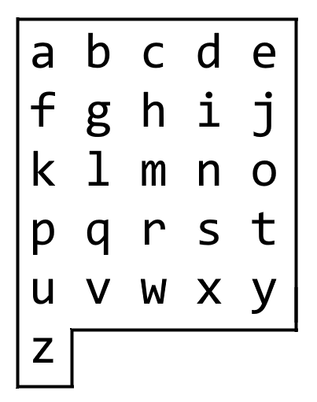
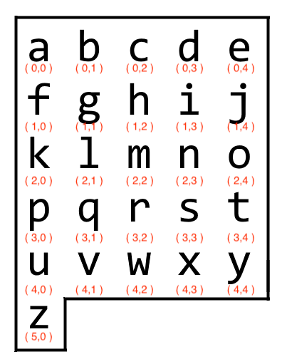

Leetcode Solution
Writing sample for a LeetCode Medium Solution
1138. Alphabet Board Path
Medium https://leetcode.com/problems/alphabet-board-path/

Fig. 1
Goal
We are given the following parameters, board and target. Our board variable will always remain the same, while target will be any series of lowercase letters.
board = [ 'abcde', 'fghij', 'klmno', 'pqrst', 'uvwxy', 'z' ]
target = 'leet'
Target acts as a reference for the letters we must find on the alphabet board. The initial starting point is always 'a'. Our goal is to find every letter from target on the board.
As we find each letter we'll record the directions we take along the way, e.g., Down, Down, Left, Right, etc. That will be the final answer we return in string format.
Example 1: Here's an example of what inputs and outputs are expected from us.
Input: target = "leet"
Output: "DDR!UURRR!!DDD!"
The exclamation points act as a separator between each letter in target. Once we find a letter, we also add an exclamation point.
Initial Strategy: Approaching Our Solution
board = [ 'abcde', 'fghij', 'klmno', 'pqrst', 'uvwxy', 'z' ]
target = 'leet'
One way to approach this problem is to talk through a solution without using any code. If we can articulate a solution, then we can convert the solution into code.
Fig. 1, depicts our board variable as an actual board. Starting from 'a', we can navigate up, down, left, or right to find each letter in target.
Now how can we convert that solution to code?
When we used Fig. 1 it provided an easy way to know our location on the board at all times. We knew what letter we were at and where the letter was in relation to other letters on the board.
Currently, our board variable is a list of strings. If possible we need a data structure that allows us to easily know where we are on the board and what letters are around us. This current list will not work.
A Better Data Structure
We need to find an alternative data structure that allows us to:
- Access letters quickly
- Access each letter's position in relation to other letters
We can build off our example in Fig. 1 and add coordinates to each letter. Fig. 2 below pairs each letter with a set of coordinates.

Fig. 2
This approach allows us to use a dictionary. A dictionary pairs together a key / value combination. The key allows us to lookup the value in O( 1 ) time.
In our case, the key / value combination could be a letter and its coordinates, e.g., 'a': (0, 0), 'b': (0, 1), 'c': (0, 2), etc.
Let's create a dictionary comprehension to create our new_board dictionary.
new_board = { board[word][letter]: (word,letter) for word in range(len(board))
for letter in range(len(board[word])) }
Testing Our Dictionary: How Will It Work?
Here's a quick example of how we will use our dictionary.
target = 'aj'
Our task is to record the directions to get from 'a' to 'j'.
Current position at 'a': (0,0)
Destination position at 'j': (1,4)
verticalMovement = destinationRow - currentRow = 1 - 0 = 1
horizontalMovement = destinationCol - currentCol = 4 - 0 = 4
Since we always start at (0,0) assume that any positive vertical movement is
down, and any positive horizontal movement is to the right.
Therefore our vertical movement is 1 down, i.e., 'D' and
our horizontal movement is 4 right, i.e., 'RRRR'.
Output:'DRRRR!'
Now that we have developed a way to deal with the coordinates in our dictionary, we can now write the code for it.
def calculate( curr, dest ):
currRow, currCol = curr # We can unpack our tuples this way
destRow, destCol = dest
verticalMovement = destRow - currRow
horizontalMovement = destCol - currCol
return row, col
Code
class Solution:
def alphabetBoardPath( self, target: str ) -> str:
board = [ 'abcde', 'fghij', 'klmno', 'pqrst', 'uvwxy', 'z' ]
new_board = { board[word][letter]: (word,letter) for word in range(len(board))
for letter in range(len(board[word])) }
def calculate( curr: tuple, dest: tuple ) -> tuple:
currRow, currCol = curr # We can unpack our tuples this way
destRow, destCol = dest
verticalMovement = destRow - currRow
horizontalMovement = destCol - currCol
return row, col # return a tuple
curr = (0,0) # our default starting point
ans = '' # return this
for i in range( len( target ) ):
row, col = calculate( curr, new_board[ target[ i ] ])
if row == 0 and y == 0: # 0,0 means same letter again, e.g., 'ee'
ans += '!'
continue
# Adjust Left, Up
if col < 0:
while col < 0:
ans += 'L'
col += 1
if row < 0:
while row < 0:
ans += 'U'
row += 1
# Adjust Right, Down
if col > 0:
while col > 0:
ans += 'R'
col -= 1
if row > 0:
while row > 0:
ans += 'D'
row -= 1
curr = new_board[ target[ i ] ]
ans += '!'
return ans